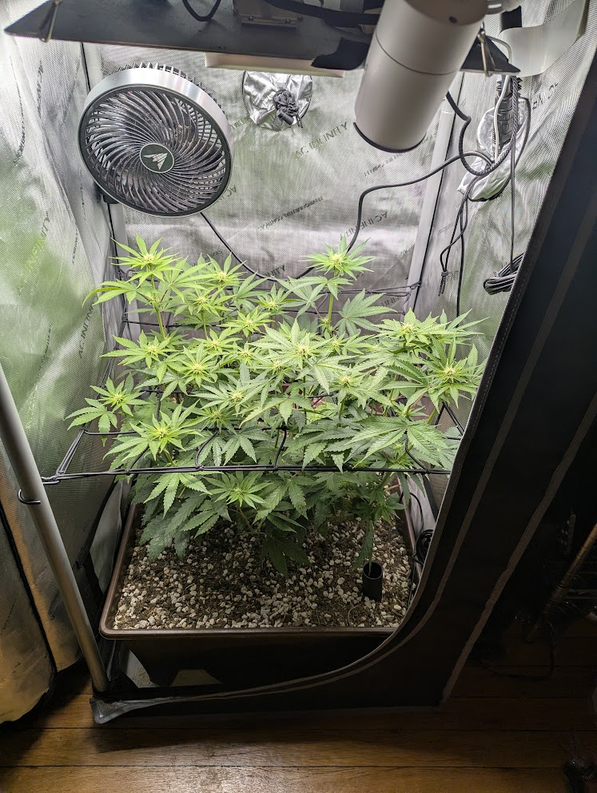
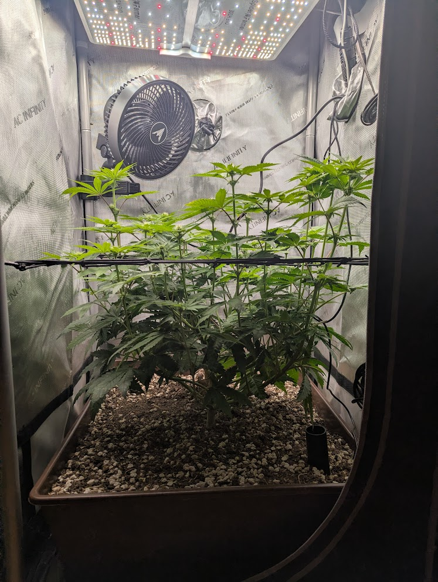
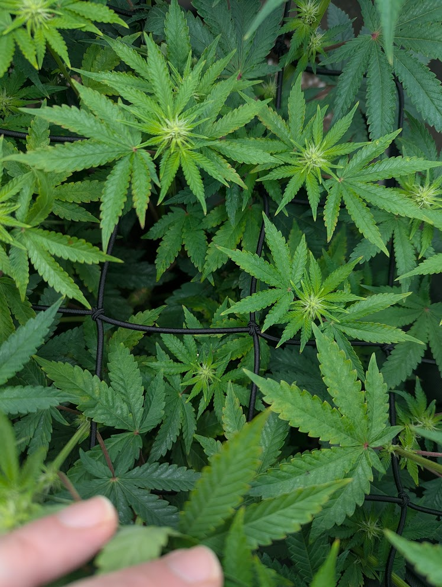
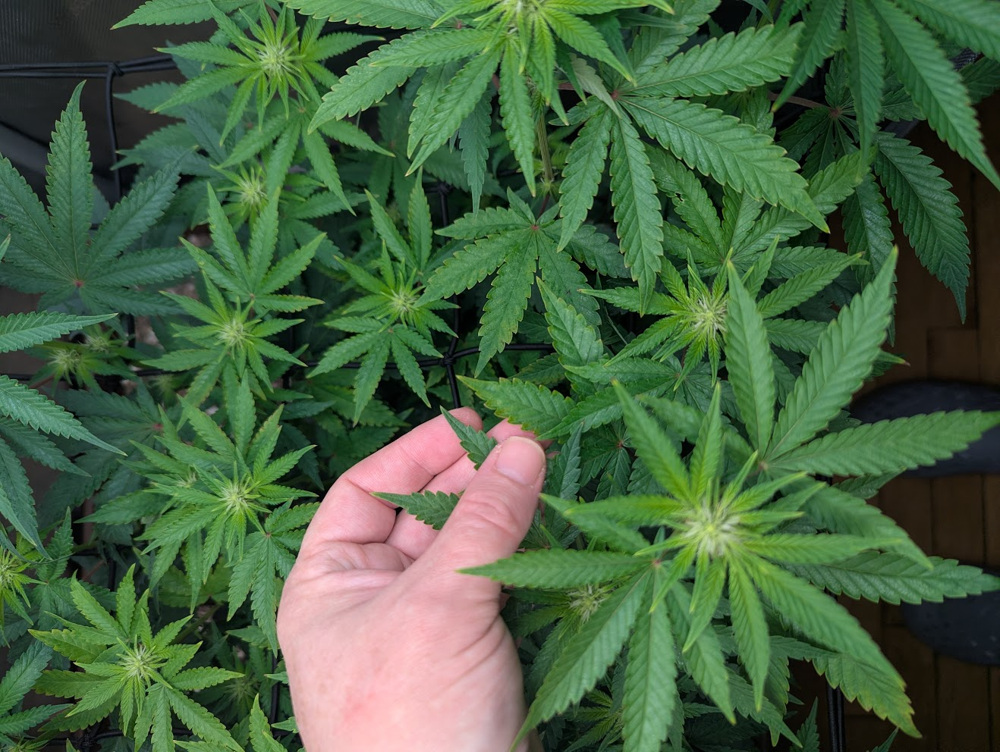
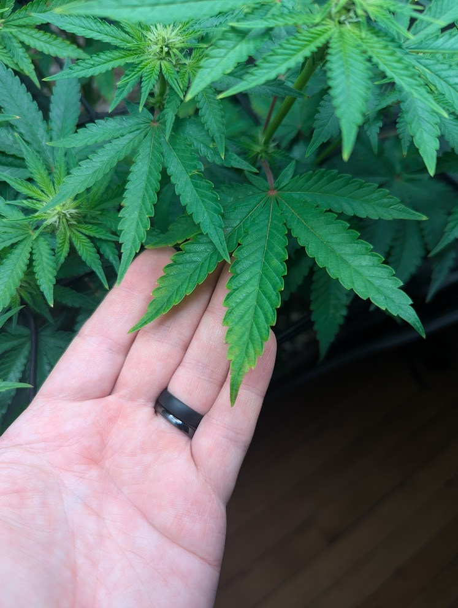
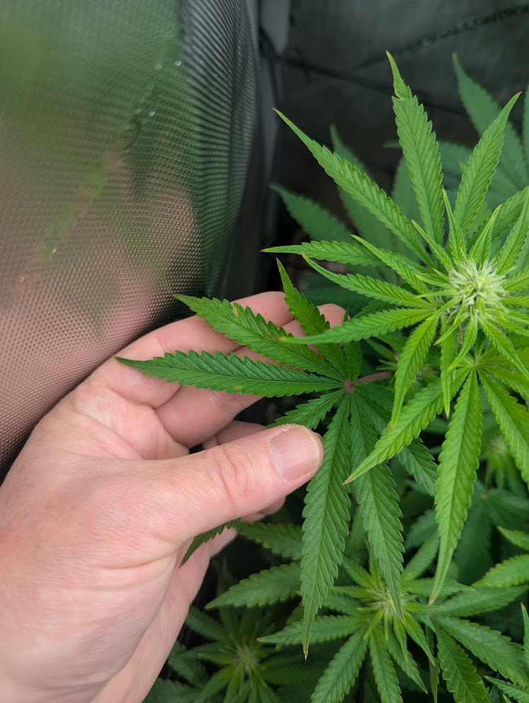
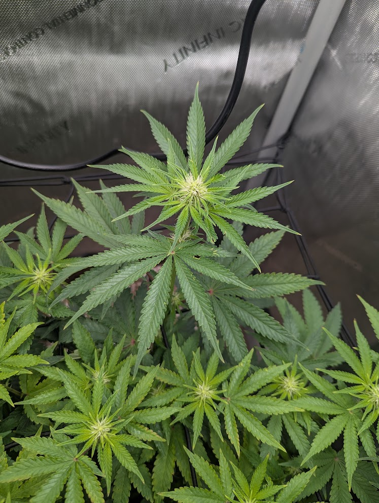
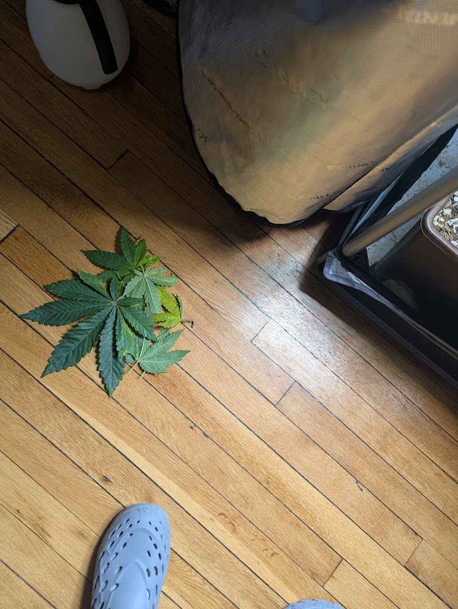

The plant looks vigorous and on-schedule. The leaf marks you flagged are minor light-stress tip burn from the canopy briefly hitting ~1050–1100 PPFD — not a nutrient deficiency. Raising the light (now ~800 PPFD at the tops) is the correct fix.




The grow is in early-to-mid flower stretch with white pistils forming at the apex sites — exactly where a healthy photoperiod should be ~19 days into 12/12. Color is a uniform medium-to-deep green, posture is upright and turgid (no droop, no clawing), and the scrog is doing its job: an even horizontal plane of competing tops rather than one runaway cola. You did a light defoliation this morning and inspected ~12 leaves with no mites seen, consistent with your recent clean inspections.




What it is: the damage is localized to the very tips of upper-canopy leaflets — the ones sitting closest to the light. The blade interiors and lower/shaded leaves are clean and green. That tip-only, top-of-canopy pattern is the signature of light intensity stress, and it lines up perfectly with the ~1050–1100 PPFD you measured on the back-left cola before raising the fixture.
Why it is not a classic nutrient deficiency:
| If it were… | You'd expect… | What we see |
|---|---|---|
| Nitrogen deficiency | Uniform yellowing of lower/older leaves first, working upward | Lower leaves green; marks are on the top — opposite pattern |
| Cal/Mag | Interveinal yellowing, rust-colored speckling mid-leaf | No interveinal pattern, no rust spots |
| Potassium | Whole-margin burn creeping inward on older leaves | Burn is tip-only on new growth, not margins of old leaves |
| Light burn (match) | Crispy/yellow tips on the highest, brightest leaves only | ✔ exactly this |
Two supporting notes: (1) you applied a flowering top-dress and watered 2 gal on 6/20, so the soil is freshly charged — a true deficiency is unlikely right now. (2) The red/purple petioles (leaf stems) visible on the top cola are a normal Papaya Crush genetic trait, not a phosphorus problem; they've been present since the 6/17 annotation. No action needed.
Clean bill of health. This is a vigorous, pest-free plant developing right on schedule for early-mid flower. The leaf marks that prompted the check are cosmetic, light-driven, and already addressed by the PPFD correction — not a deficiency and nothing to treat. No nutrient changes warranted.
Three structural decisions, all best handled in a single session while the plant is still in stretch and the stems are flexible. Suggested order: light defoliation → install second net → add under-canopy fan.
Install a second layer ~6–8" above the current net while stems still bend. Its job is to organize the remaining stretch and support heavy colas in late flower. Both require weaving the tops through while they rise — wait until stretch ends and the stiffened stems won't cooperate. Tuck each rising cola through a square over the coming week.
A measured pass is appropriate (you're ~day 19; the usual flower defoliation lands around day 21). Pull only leaves that (1) shade lower bud sites, (2) crowd the interior and choke airflow — extra important given the mite history, or (3) are already tip-damaged. Keep it surgical, not aggressive, during active stretch. That's about the last big defoliation until late stretch.
Worthwhile here. A dense 2×2 develops stagnant, humid pockets in the understory, which is where bud rot starts and where mites hide. A small clip fan circulating air across the soil surface and lower stems helps both. Aim it to stir the understory, not blast one stem (hard direct wind causes the same tip burn seen up top), and watch that the soil surface doesn't dry too fast.